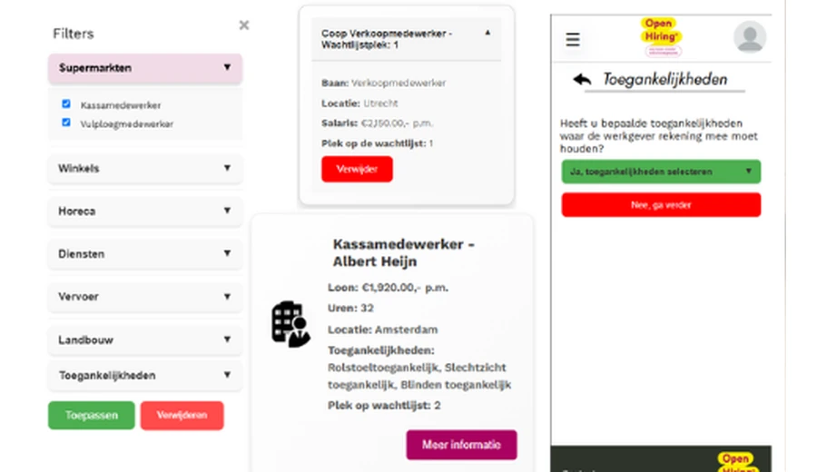
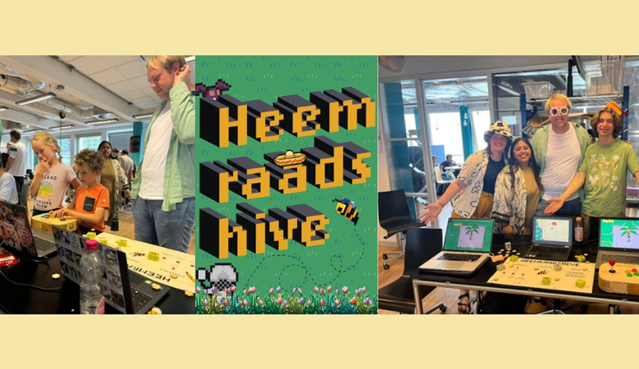
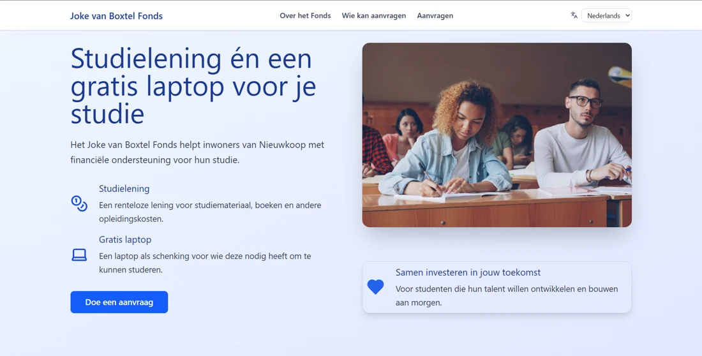

Book club app / 6-month school project
Read The Room.
A shared space for book clubs to choose their next read, track progress and plan the conversation. Six months of app development, brought to life with my own product video.
Explore the projectFront-end developer & creative thinker
Hi, I'm Elisa. I bring development and design together to create digital experiences that feel good to use and serve a real purpose.

CMGT Rotterdam University of Applied Sciences
With a passion for education.
01 Selected work
Book club apps, learning platforms and websites for real organisations. Different challenges, the same curiosity.
Book club app / 6-month school project
A shared space for book clubs to choose their next read, track progress and plan the conversation. Six months of app development, brought to life with my own product video.
Explore the projectWeb app / Education
Learning sign language by doing. An interactive learning platform with exercises, a dictionary and a clear view of your progress.
View project
UX/UI / Mobile-first
Applying for work without a CV or cover letter. An accessible, mobile-first prototype designed to make the first step easier.
View project
Game development / Interaction
A bee, a city square and an adventure. A story-driven exploration game designed to reward curiosity.
View project
Website / Social impact
A website for a Nieuwkoop foundation offering study support. I built an online home for its story, eligibility information and application form.
View project02 The person behind the code
A head full of ideas.
And the drive to bring them to life.
I feel most at home where technology, creativity and education meet.
I study Creative Media and Game Technologies at Rotterdam University of Applied Sciences and also work in primary education. That combination shapes what I make: a focus on people, room to explore and a desire to make things easier to understand.
My focus is on front-end development and creative design. I enjoy learning, working both independently and with others, and using feedback to improve what I build.
My approachCurious, proactive & involved
LanguagesDutch · English (C1)
03 Say hello
A question about my work, an interesting idea or just a chance to connect? I'd love to hear from you.
elisazornig@gmail.com Or find me on LinkedIn (opens in a new tab)